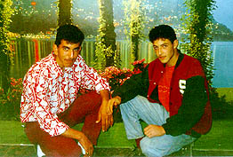
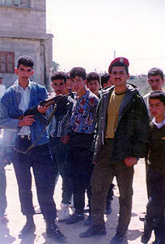
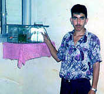

PERSONAL STORIES
"Do you think I can leave my father to beg?"
Sami Abdel Azeez Ismail Tafish, aged 19, Gaza City, Gaza Strip.
Right: Sami in his Boy Scouts' uniform
Sami was strong-willed and a natural leader. Even at school he had shown his leadership ability - taking responsibility for the school scouts while he was studying.
He could also be stubborn, his family remembered. When he spoke with his mother about marriage, he would constantly tell her that he would do it his own way, instead of in the traditional manner. "I will get engaged by myself and will not allow you to choose for me."
Sami left school after 9th grade because of the financial situation of the family. He was the third youngest in a family of seven children and his father had become ill after donating one of his kidneys to his mother. To Sami's great sorrow, his mother died only two months before his own death. His family told of how he had cried alone in his room but hid his tears whenever anyone entered.
Sami went to work as an electrician and his grandmother recalled him saying, "I left school because I needed to feed my brothers, sisters and grandfather."
" He used to buy me sweets," one of his sisters remembers, "and even when I said I don't want them: 'Give them to your brothers and sisters!', he would say: 'Don't worry, I'll feed them even if I have to beg.'" When he was at school he wanted to be a doctor but after leaving school early he used to say, half-joking and half-serious, "My brothers, sisters and grandmother are the best school I can have."
Left: Sami (left) with a friend in a photo studio in the Sheja'eyyah neighbourhood, Gaza City.
His grandmother says that Sami used to wake up very early to go to work. Whenever she would ask him to take a break, he would refuse, telling her, "Do you think I can leave my father to beg? No. I won't do it."
He was close to his grandmother, whose husband had been killed by the Israelis in 1956. She is now 75, and remembers fondly how whenever Sami saw her sad or lost in thought, he would tell her, "Don't worry grandmother - we'll marry you off to someone!"
In his spare time, Sami would help his father farm a small plot of land. His father remembers Sami as always ready for a laugh, "I often told him off for this, telling him, 'You are a man - you must be serious!'"
Sami's little brothers still ask their grandmother, "When Sami was here he used to bring us sweets. Why isn't father doing the same?" She tells them, "Your father is sick and cannot afford sweets for you like your brother."
Above: Sami (left) and a friend in the
occupation-scarred streets of Gaza
His family had a long experience of suffering caused by the Israeli occupation. His brother Ismail, 27, was injured in his leg during the intifada and still suffers pain in his knee. His 25-year-old brother Ayman was arrested twice, the first time for three months and the second time for two years.
Left: Sami holding a Kalashnikov in the classic post-redeployment pose with a Palestinian Policeman
Once, during the Intifada, Sami was wearing a mask in the street during some protests. A neighbour, who was mute, recognised Sami even behind the mask and told Sami's father. When his father faced him, Sami denied he had been in the streets. So his father called the mute neighbour to confront Sami. He used sign language to insist that he recognised Sami and then Sami turned to face his father, telling him, " I don't understand a word of what he says."
In his spare time Sami liked to watch Arabic serials and soccer on TV. He also enjoyed patriotic songs. One of his favourite hobbies was looking after goldfish. He used to eat everything - never refusing any kind of meal.
Right: Sami and his goldfish!
On the day of his death, Sami came back from work early because of an argument he had with his boss. He told his uncle that he would stay at home for the rest of the day. But minutes later he left the house with his cousin, leaving his ID and documents. What suprised his uncle the most was that he didn't finish drinking his tea even though he loved it very much.
Sami's father was in Jordan. When he heard about the clashes he phoned to make sure that his sons were okay. "Yes father," they answered, "everything is fine." They still did not know about Sami's death because he had not had his documents on him when he was killed and had not yet been identified.
They only discovered his death in the evening, while they were following the developments on TV and saw the picture of his dead body. Near the settlements of Netzarim, where the clashes occurred, he was shot from a very short distance with live ammunition in the chest and died instantly.
Above: Sami (right) and a friend in the Scouts
Back to PERSONAL STORIES or on to the NEXT STORY